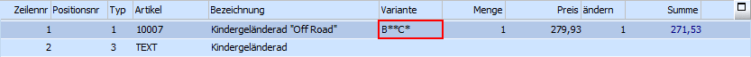
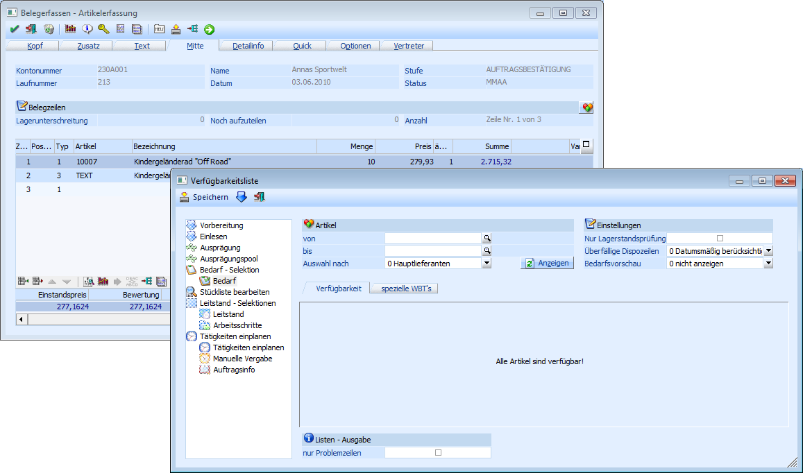
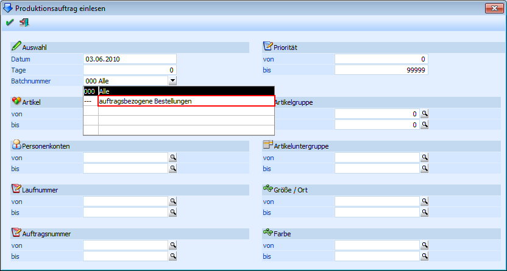

Um eine auftragsbezogene Produktion durchführen zu können, ist eine entsprechende Stammdatenanlage notwendig (nähere Informationen siehe Kapitel "Artikelstamm - Produktionsartikel (Halbfertig- und Fertigprodukte)" und "Belegartenstamm (auftragsbezogene Produktion/Bestellung)").
Wenn die Stammdaten entsprechend hinterlegt sind, kann der auftragsbezogene Produktionsartikel in der Belegerfassung, welche über den Menüpunkt
1 WinLine FAKT
1 Erfassen
1 Belege erfassen
aufgerufen wird, in einem Auftrag erfasst.
Hinweis
Wird ein Produktionsartikel erfasst, der innerhalb der Stückliste "Varianten" definiert hat, so kann bereits in der Belegerfassung die entsprechende Variante hinterlegt werden.

Über das Öffnen des Stücklistenfensters wird nun gesteuert, ob die Anlage des Produktionsauftrags sofort oder später (durch eine manuelle Übernahme in der Produktion) geschehen soll:
ü Stücklistenfenster wird geöffnet
Nach Bestätigung der Menge in der Belegerfassung wird automatisch das Programm "Produktionsvorbereitung" in der Stufe der Verfügbarkeitsprüfung geöffnet und die Produktionsauftragsanlage kann stattfinden.
Hinweis
Nachdem die Auftragsanlage stattgefunden hat wechselt das Programm automatisch wieder in die Belegerfassung zurück.

ü Stücklistenfenster wird nicht geöffnet
Bei der Erfassung des auftragsbezogenen Produktionsartikels geschieht offensichtlich nichts Besonderes. Im Hintergrund allerdings werden die erzeugten Auftragsinformationen in die immer bestehende Batchnummer "--- - auftragsbezogene Bestellung" geschrieben.
Über "Produktionsauftrag einlesen" (WinLine PPS - Produktion - Produktionsauftrag einlesen - Feld "Batchnummer" auf "auftragsbezogene Bestellung") können dann Produktionsaufträge erzeugt werden (nähere Informationen siehe Kapitel "Produktionsauftrag einlesen").

Hinweis
Ob sich die Stückliste öffnen soll oder nicht kann in den Artikelstammdaten (WinLine FAKT - Stammdaten - Artikelstamm - Artikel - Register "Lager") über das Feld "Stücklistenfenster" gesteuert werden. An dieser Stelle gibt es folgende Einstellungsmöglichkeiten:
ü 0 - lt. FAKT-Parametern öffnen
Es wird die Einstellung aus den FAKT-Parametern (WinLine Start - Parameter - Applikations-Parameter - FAKT-Parameter - Belege - Stücklisten - Bereich "Produktionsartikel / Produktionsstückliste" die Option "in der Stufe Auftrag öffnen") herangezogen.
ü 1 - immer öffnen
Die Stückliste wird immer geöffnet. Diese Hinterlegung übersteuert die Einstellung aus den FAKT-Parametern.
ü 2 - nie öffnen
Die Stückliste wird nicht geöffnet. Diese Hinterlegung übersteuert die Einstellung aus den FAKT-Parametern.